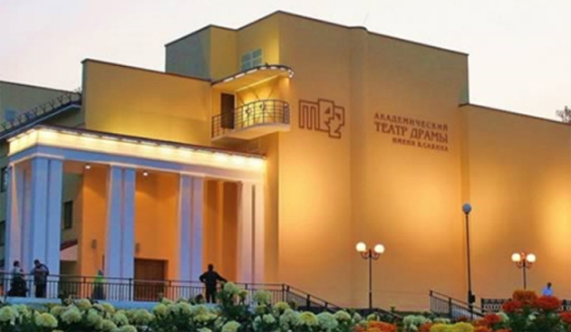

Академический театр драмы имени В. Савина

Академический театр драмы имени В. Савина. Строительство, реконструкция, 2009 г.
Вы сможете быстро и качественно построить вахтовый поселок, офис, магазин, гостиницу, столовую, кафе, детский
сад, пропускной пункт, военный городок, мобильную клинику и многое другое! Вы сможете быстро и качественно
построить вахтовый поселок, офис, магазин, гостиницу, столовую, кафе, детский сад, пропускной пункт, военный
городок, мобильную клинику и многое другое! Примеры использования блок-контейнеров Вы можете посмотреть здесь.